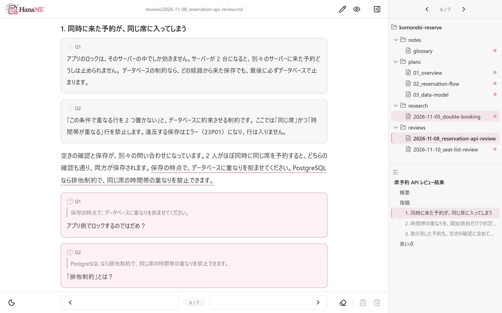
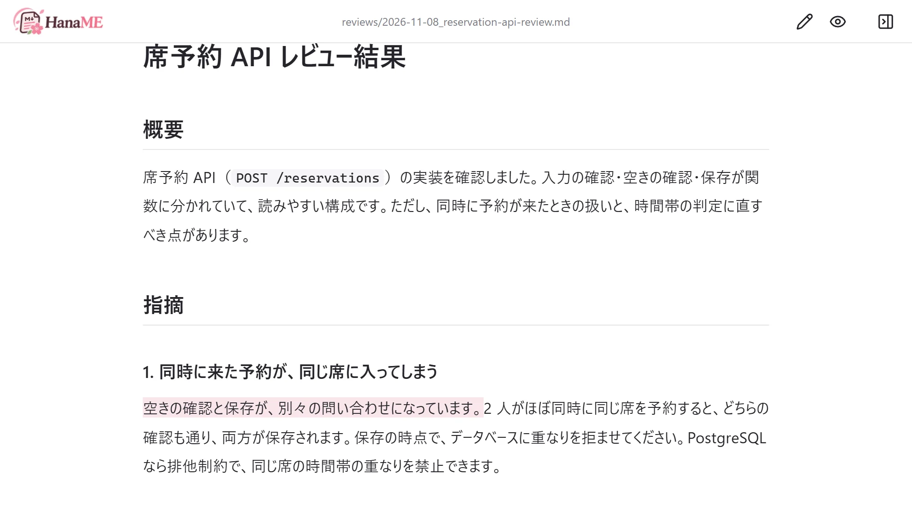
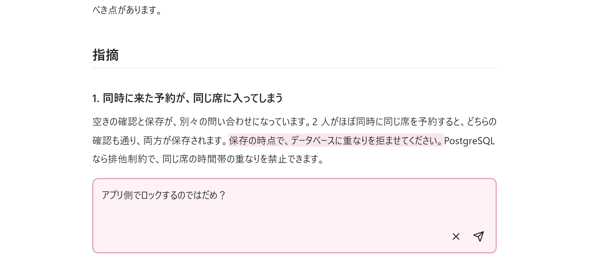
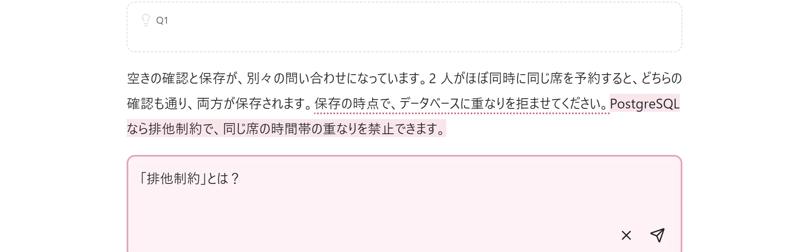
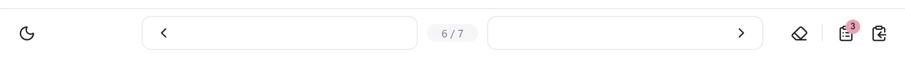
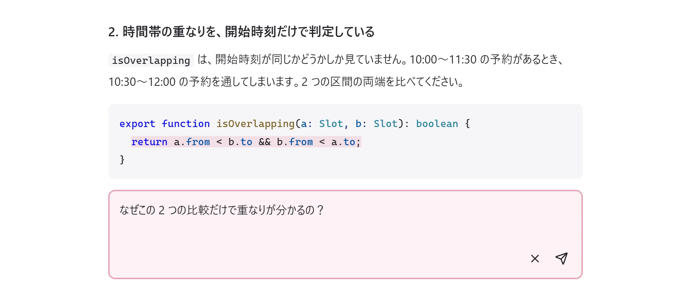
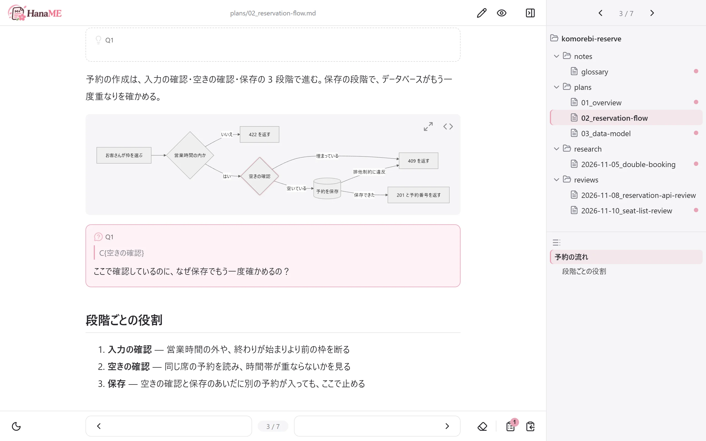
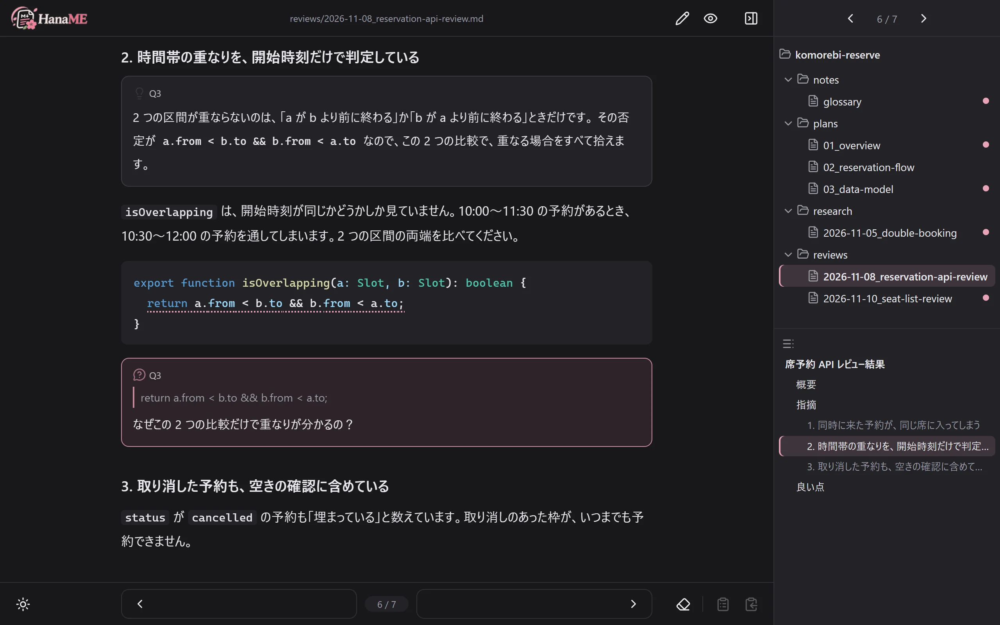
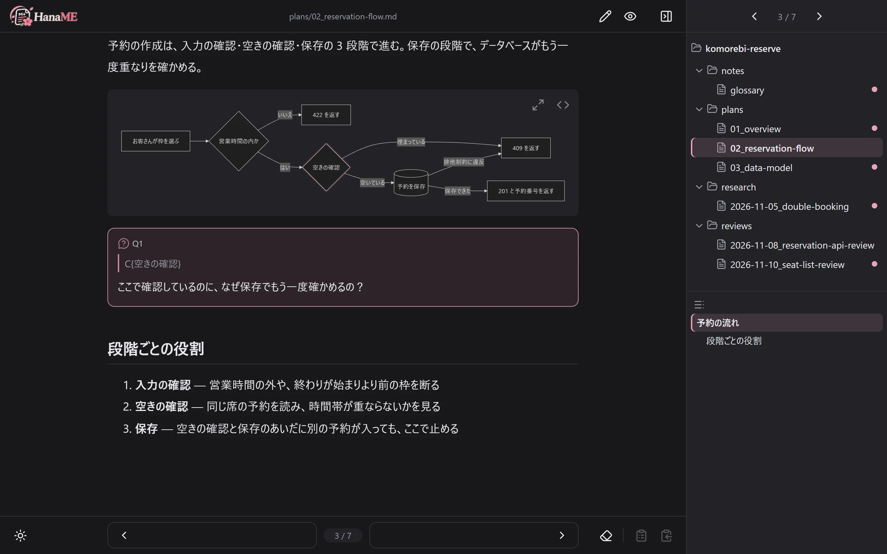

花見
md ファイルを、
まとめて読んで、
まとめて聞く。
AI が書いた大量の .md を、要約せずに読み切るためのローカルビューアです。分からない文には、その場で質問を書き込めます。いま使っている AI ツールが、本文の中に答えを書き込みます。

大量の md ファイル、
読み切れていますか？
AI と開発していると、レビュー・設計・調査の .md が次々に届きます。開発の速さに、読む側が追い付きません。
- 1 つ 1 つが長く、数も多い
- 分からない一文が出るたびに、チャットへ移って聞き直す
- 往復が面倒になって、要約で済ませたり、読み飛ばしたりする
HanaME は、この往復を 1 回にまとめます。

使い方は 3 段階
-
読む
気になった文をクリックすると、その文への質問欄が開きます。質問は何個でも、何ファイルにまたがっても構いません。言葉をなぞれば「〇〇とは？」の下書き付きで開きます。

文をクリックして、その場で書く 
言葉をなぞると、下書き付き -
まとめて聞く
書いた質問は、すべて 1 つの指示文にまとまります。フォルダ全体の未回答の数が、ボタンのバッジに出ます。渡し方は、使っている AI ツールに合わせて選べます。

未回答の質問が 3 つ。右の 2 つのボタンで、指示文か中身ごとをコピー AI ツールへの渡し方 AI ツール やること Claude Code など、スキルが使えるもの 「HanaME の質問に答えて」と頼むだけ ファイルを読み書きできる AI ツール 指示文をコピーして、貼り付ける ブラウザの AI チャット 中身ごとコピーして貼り付け、返ってきたファイルで上書きする -
答えが本文の中に届く
AI が .md に回答を書き込むと、画面がすぐ更新されます。回答は見出しのすぐ下に入るので、読みながら答え合わせができます。
質問を書いてから、回答が届くまで
1 文ずつ、1 行ずつ、図の部品まで


HanaME が約束すること
- 要約しない
- 原文のまま読みます。AI の長い説明も縮めず、必要なら別の .md に分けて書かせます。
- API がいらない
- API キーも追加の課金もいりません。Claude Code・Codex・Cursor・ブラウザの AI チャットなど、いま使っている AI をそのまま使います。
- ファイルが正本
- 質問と回答は、.md に普通の引用として書き込まれます。GitHub や他のエディタでも、そのまま読めます。
- 手元だけで動く
- サーバーは自分のパソコンの中だけで動きます。設定ファイルもいりません。
夜は、夜桜の配色で
左下のボタンで、昼と夜を切り替えられます。夜のコードは VS Code の Dark+ と同じ色です。


はじめかた
必要なもの
- Node.js 22.23.4 / 24.22.1 / 26.12.1 以降
- AI ツールを 1 つ（ファイルを読み書きできるもの、またはブラウザの AI チャット）
-
インストールします。
npm linkしておくと、どのフォルダでもhanameが使えます。git clone https://github.com/HarutarouKawamoto/haname.git cd haname npm install npm link -
読みたいフォルダで起動します。ブラウザが自動で開きます。
cd your-project haname -
AI ツールの準備をします（最初に一度だけ）。これで「HanaME の質問に答えて」と頼むだけで通じます。
haname init
頭で理解したら、指で覚える
HanaME花見
AI が書いた .md を読んで、質問して、頭で理解する。
SumiRE墨入れ／菫
AI が書いたコードを上からなぞって打ち、指で覚える。
SumiRE のサイトへ